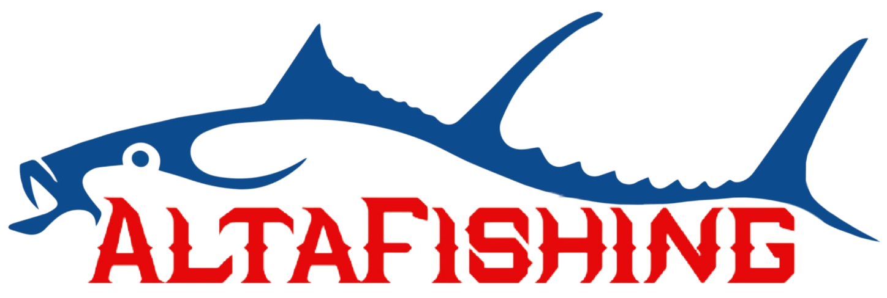

12 AM hoy
6 PM 18:00
subiendo
bajando
Sin dato
-- m
Presiona actualizar para cargar datos marinos segun tu ubicacion.

AltaFishing Pesca desde orilla InicioMareas y solunar
Presiona actualizar para cargar datos marinos segun tu ubicacion.
Revisa la proyeccion real de marea hasta 7 dias.
| Hora | Tipo | Altura marea | Actividad |
|---|---|---|---|
| Sin datos cargados. | |||